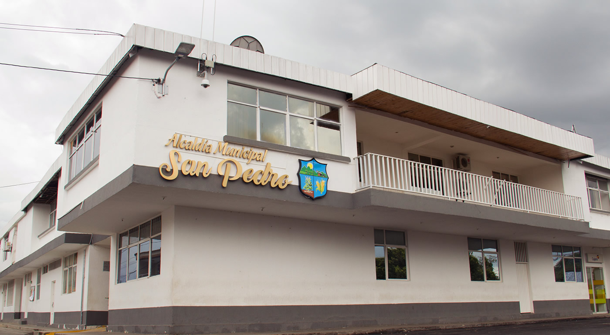
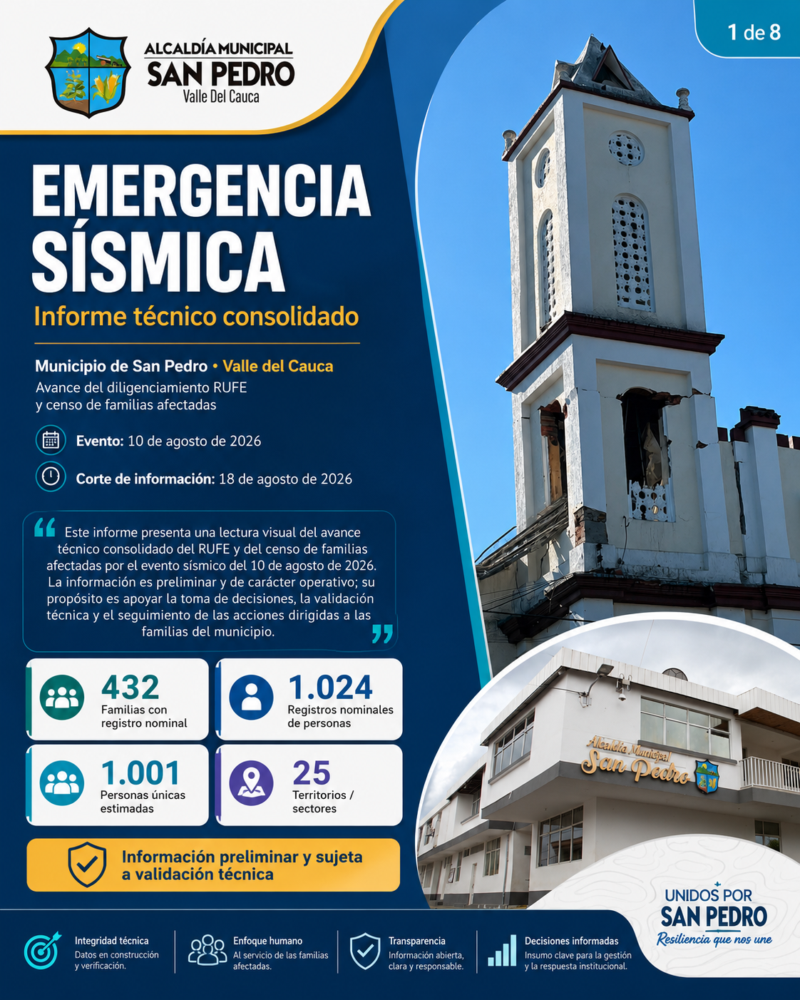

El registro ya tiene una escala territorial clara.
432 familias nominadas y 1.024 registros de personas permiten leer la emergencia por población y territorio.
Centro interactivo de información del avance del diligenciamiento RUFE y del censo de familias afectadas por el sismo del 10 de agosto de 2026.

El censo consolida información nominal de hogares distribuidos en 25 territorios o sectores.
432 familias nominadas y 1.024 registros de personas permiten leer la emergencia por población y territorio.
90 marcas “no habitable” y 2 “destruida” conforman el universo inicial de verificación prioritaria.
179 menores de edad y 283 personas de 60 años o más requieren atención sensible a edad, apoyo y alojamiento.
111 núcleos vacíos, 23 grupos de documentos repetidos y 40 familias sin estado aún exigen depuración y validación.
90 marcas “no habitable” y 2 “destruida” constituyen el primer universo de verificación en campo.
Es el sector con mayor volumen nominal; el volumen del censo no equivale por sí mismo a intensidad sísmica.
Contarlos como familias produciría una sobreestimación del tamaño real del censo.
Busca, segmenta, ordena y compara familias, personas, casos prioritarios y brechas por territorio.
| Sector | Familias | Personas | No hab. | Destr. | Prioridad | Tasa* | Sin estado | Núcleos vacíos |
|---|
* La tasa prioritaria es una métrica exploratoria calculada por la micropágina: (no habitable + destruida) / familias nominales. No constituye una clasificación oficial del informe.
Lectura censal de 432 familias. Las categorías no son totalmente excluyentes.
Primer universo de verificación prioritaria; no equivale a dictamen estructural.
Distribución por sexo, ciclo de vida y ubicación declarada de las familias.
179 niñas, niños y adolescentes y 283 personas de 60 años o más. Estos grupos deben considerarse en alojamiento, ayuda humanitaria, salud, redes de apoyo y programación de visitas.
Identifica inconsistencias, su riesgo para la decisión y el tratamiento recomendado.
Flujo técnico, reglas de depuración, objeto y alcance del informe.
Contexto del evento, aplicación de la Ley 1523 de 2012 y relación RUFE–RUD.
| Eje normativo | Aplicación al consolidado |
|---|
La consolidación oficial requiere coordinación territorial, soportes, control de calidad, validación del CMGRD y las condiciones administrativas aplicables para el cargue y cierre.
Acciones recomendadas, matriz de priorización y conclusiones del corte.
Aprobar reglas de depuración, distribuir verificaciones y adoptar un corte oficial trazable.
Selecciona una pieza para verla en gran formato. La galería no bloquea la navegación.

Consulta el PDF original y navega por el índice temático sin salir de la micropágina.
| Dimensión | Indicador | Valor |
|---|